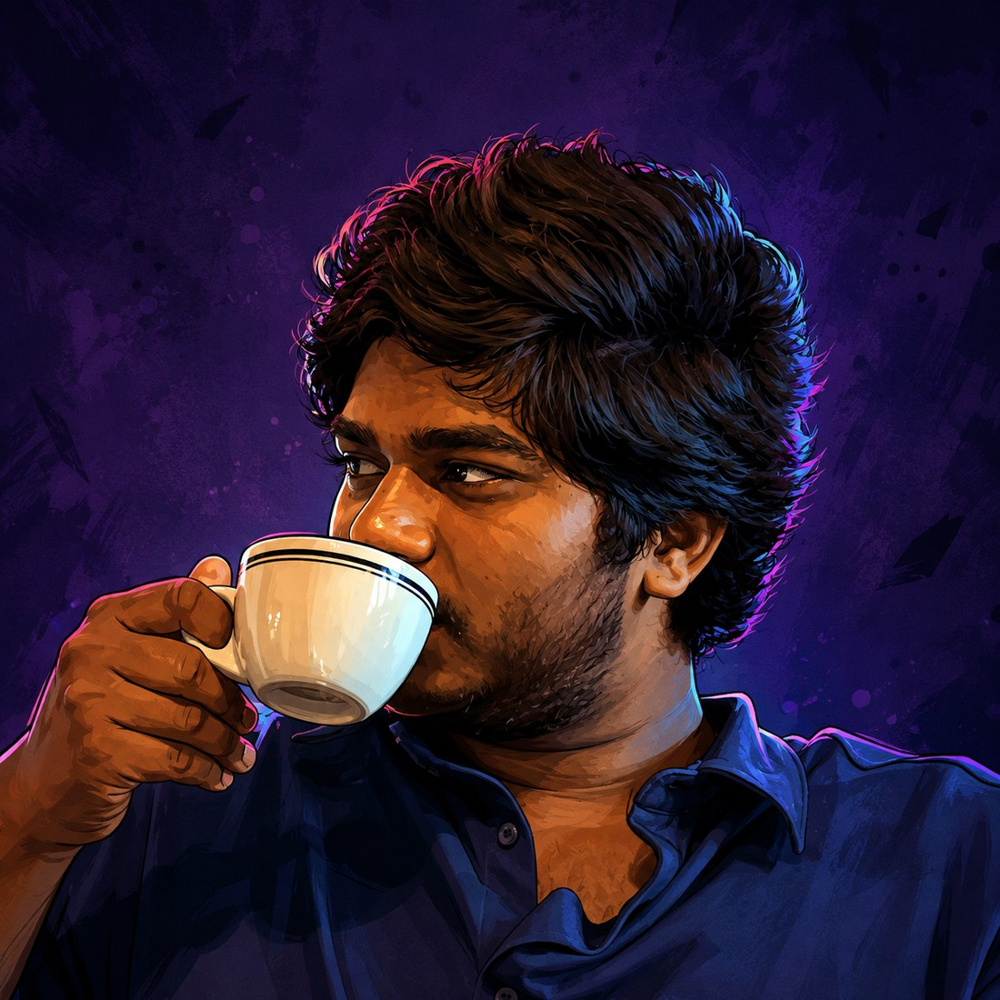

AtCozy00:29
Building SaaS videos, poster designing, 3D artwork & motion VFX. Four years of post, spent on the details nobody is supposed to notice.
SaaS demos and launch trailers that make software feel intuitive.
Tracking, roto, clean plates and composites — invisible or loud.
Node-based grading built to hold up on every screen.
Blender scenes, product key art and kinetic typography.

Four years of hands-on post-production, spent almost entirely on the precision work: 3D tracking, rotoscoping, kinetic typography and multi-pass cinematic colour. The parts of a film that only announce themselves when they are done badly.
My work sits where design and post-production meet — SaaS launch films that need motion, 3D renders that need a grade, posters that need both. I work remotely with brands and studios anywhere, and I would rather ship one frame that earns its place than fifty that fill time.
See the reelEvery job runs the same way: a discovery pass so we agree what the film has to do, then build, then grade, then deliver in every ratio the campaign actually needs. Turnarounds below are real ones, not the ones that look good on a deck.
Scroll-stopping product films that make complex software feel intuitive. Master 60–90s launch film, vertical and square cutdowns, 6–10s teaser loops, animated UI and device mockups, captions and audio stems.
Invisible fixes and loud spectacle both. Shot-by-shot breakdowns, 3D camera tracking and object integration, wire and object removal, particle and light-wrap passes, layered project files on delivery.
Node-based grading in Resolve Studio, built to survive every screen it lands on. Shot-matched primaries, custom show LUTs, skin-tone protection, film grain and halation, print emulation, broadcast QC.
Blender-built environments, product key art and kinetic typography. Textured and lit 3D scenes, print-resolution posters, looping turntables, logo stings, and the source files and render passes with them.
Available worldwide, working remote. Send the brief, the footage, or just the rough idea — I will tell you honestly whether it is a five-day job or a five-week one.